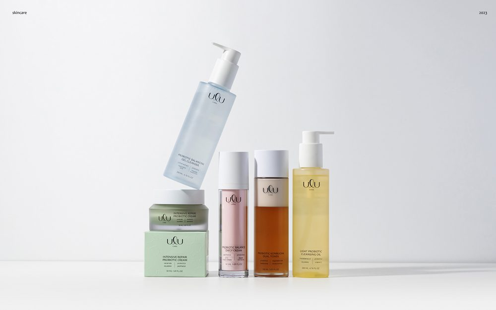
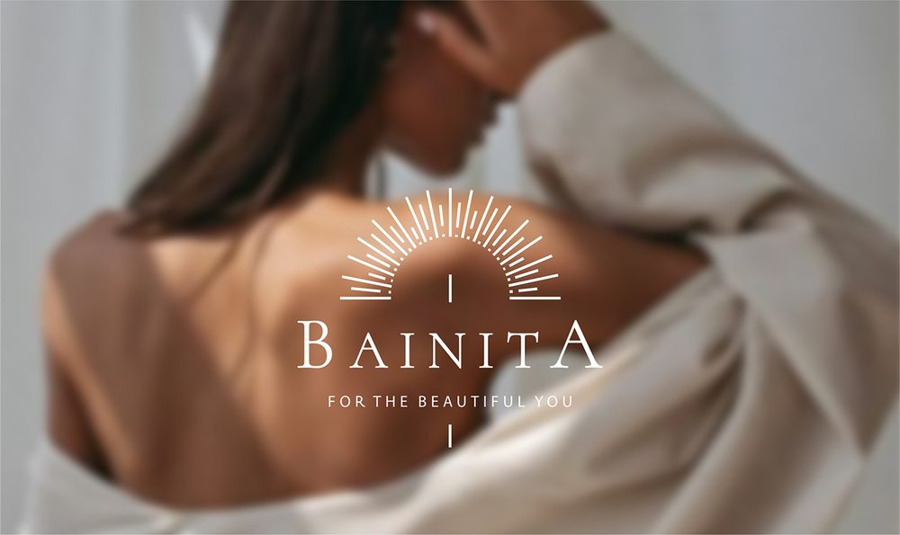
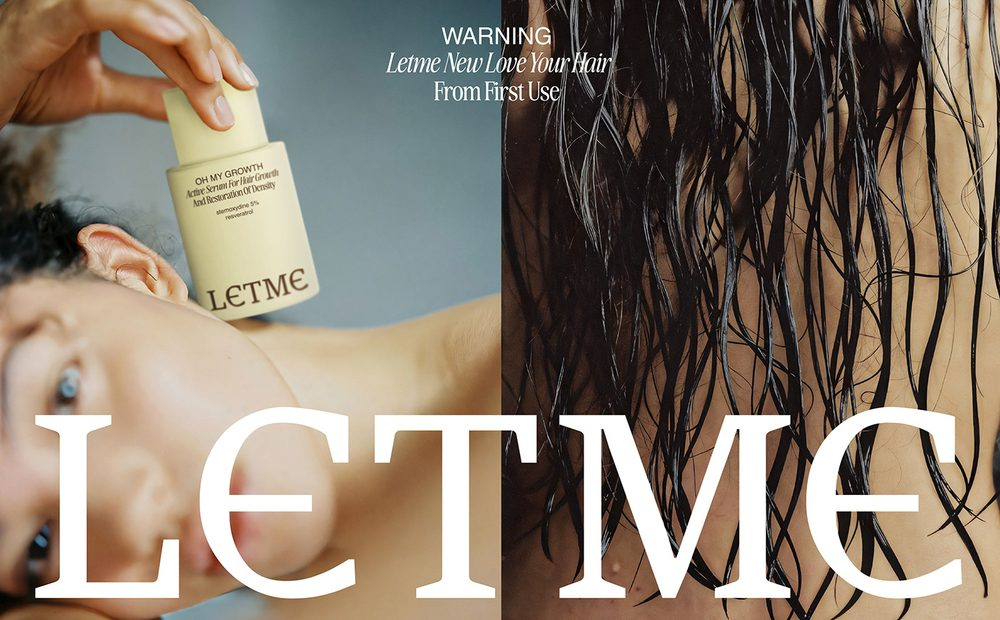
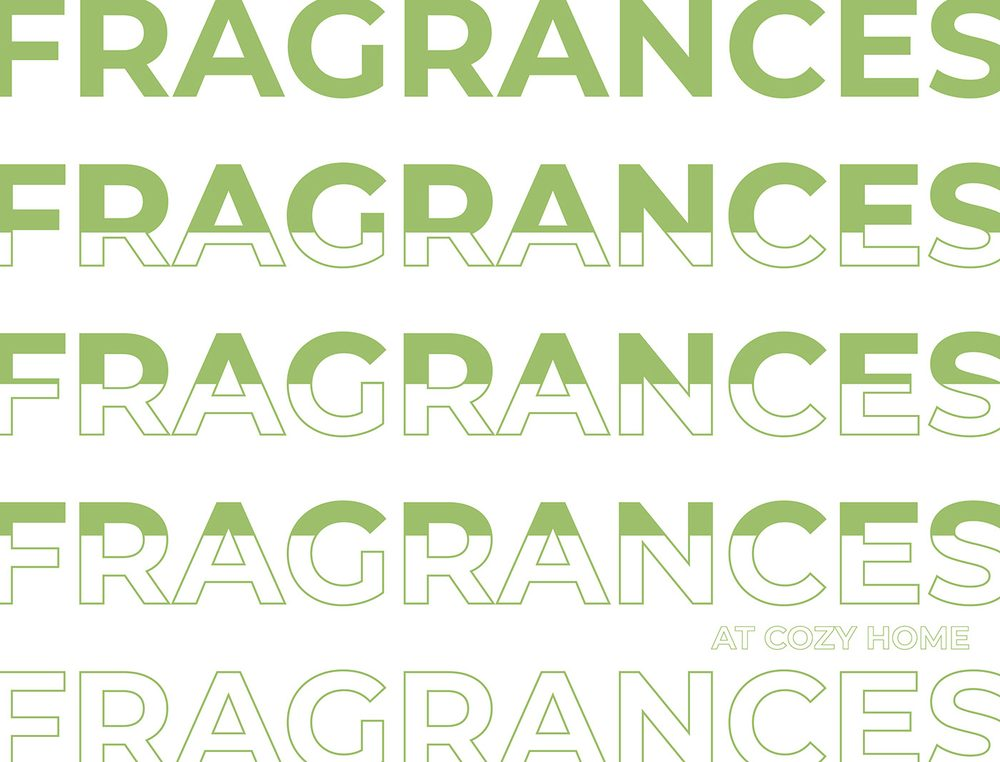
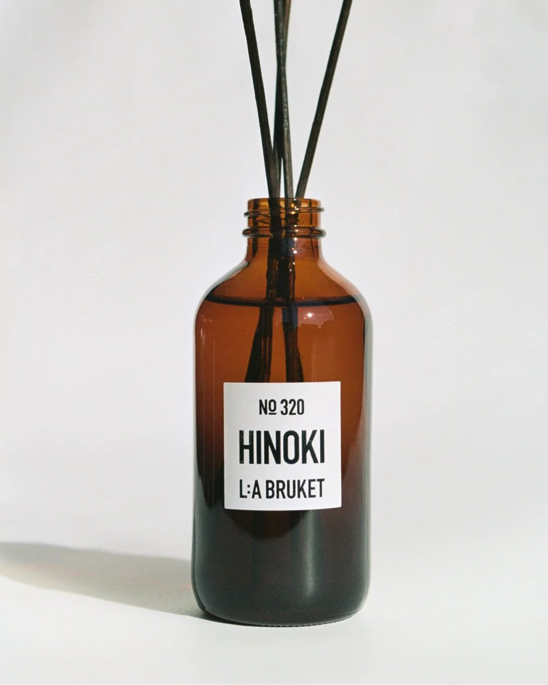
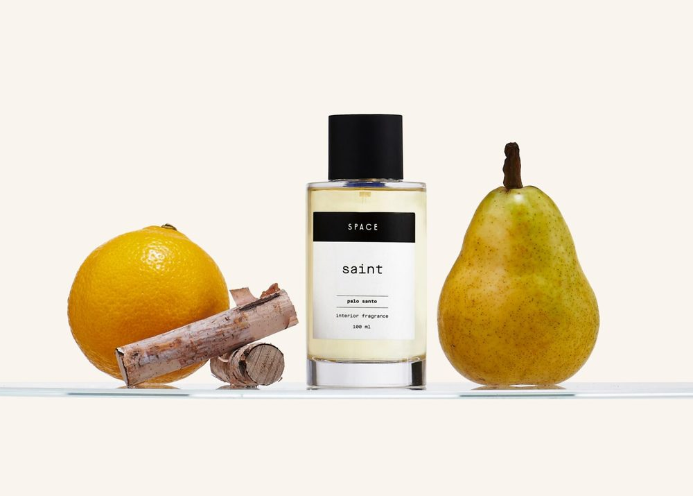
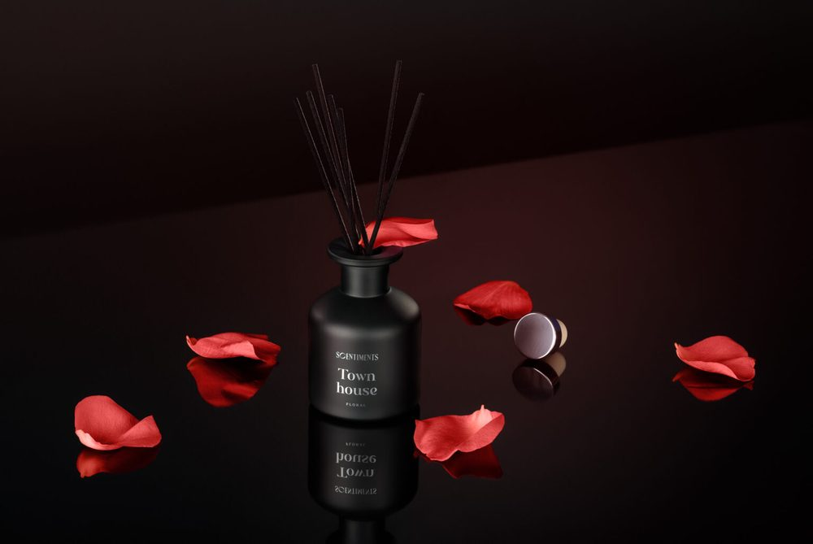
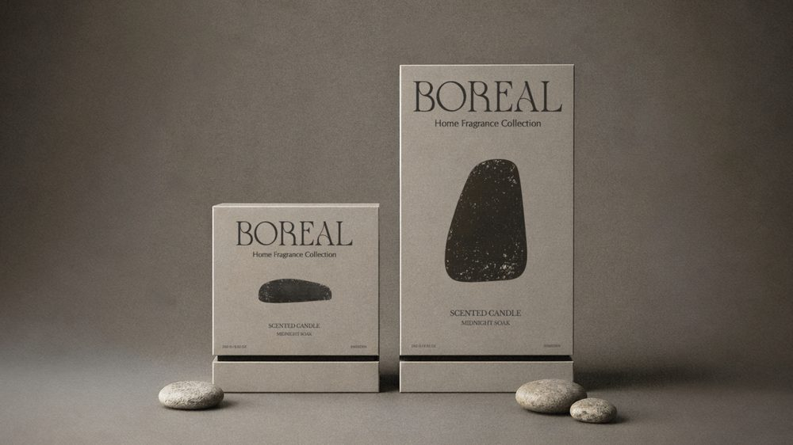
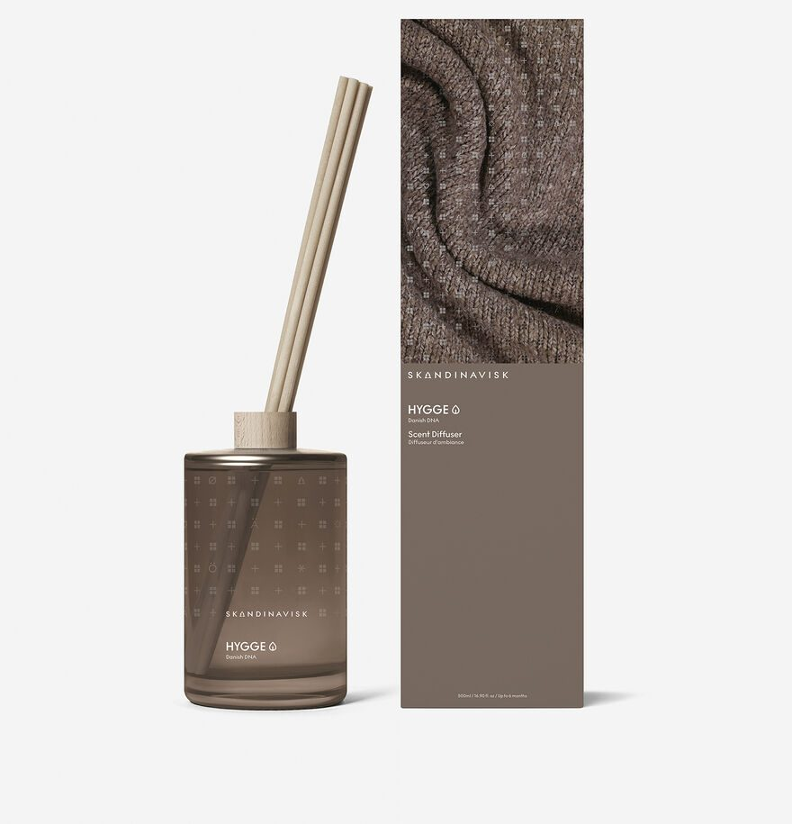

Поиск дизайнера этикеток
Задача: найти 3 дизайнеров под этикетки нового бренда ароматов для дома. Нужны упаковка и этикетки в портфолио, современный минимализм, желательно косметика, парфюмерия или товары для дома.
Искал на Behance по-русски («диффузор», «этикетка свечи», «ароматы для дома») и по-английски («home fragrance packaging», «perfume packaging») с фильтром по России. Отсеивал студенческие концепты, инфографику для маркетплейсов и тех, у кого упаковки нет в портфолио. Оставлял тех, у кого упаковка — основная специализация, чистый минимализм, работы для косметики или ароматов для дома 2023–2026 и кнопка «Нанять» на Behance.

Дарья Кост · «Коллегиум»
- ULU cosmetic packaging (2025) — спокойная дорогая подача, 1,6 тыс. оценок.
- Разнолесье (2026) — четыре линейки в одной системе: у каждого аромата свой характер, бренд узнаётся сразу. Ровно наша задача.
Почему: умеет строить систему линейки, а для бренда с несколькими ароматами это главное. Самый сильный по оценкам из найденных. Цена (вкладка «Услуги»): от 1 200 $ за позицию — 2 концепции, 3 раунда правок, подбор материалов, 1–2 недели. Риск: оплата из России в Грузию — уточню, как удобнее принять оплату от ИП.

Елена Лучинина
- Bainita (2023) — реальный бренд с сетью магазинов: технические макеты коробок и этикеток на 12+ SKU, контроль печати, расчёт тиража.
- LEYLIT — премиальный уход в стилистике «тихой роскоши», в проекте отмечен дизайн этикеток.
Почему: доводит макеты до типографии — для нового бренда это половина успеха: этикетка должна правильно лечь на флакон и не «поплыть» в тираже. Цена (блок «Сервисы»): упаковка от 1 200 $, логотип + стиль от 550 $. Риск: мало оценок на Behance, публичных отзывов не нашёл.

Валерия Карачева
- ARTIFACT · candles brand (2022) — скульптурные свечи; в тегах candles packaging, diffuser, home fragrance. Прямое попадание в категорию.
- LETME · hair care (2025) — айдентика и упаковка линейки ухода за волосами.
Почему: типографика и много воздуха, по стилю ближе всех к нишевому бренду ароматов. Цена: публично только Brand Identity от 1 000 $ и Logotype от 500 $, этикетки — по запросу. Риск: проект со свечами 2022 года; неясно, делает ли печатные макеты — спрошу.

Запасной вариант: Анастасия Леонова, Москва
Ароматические саше для Cozy Home (2023) и косметика Compliment (2026). Понимает требования сетей и маркетплейсов к упаковке, бюджетный вариант. Минус: стиль ближе к масс-маркету, минимализм придётся жёстко прописать в брифе. Держу в запасе, если бюджет окажется ниже 1 000 $.
| Кандидат | Упаковка / этикетки | Минимализм | Косметика / парфюм / дом | Цена (публично) | Риски |
|---|---|---|---|---|---|
| Дарья Кост / «Коллегиум» | основная специализация, 10+ проектов | да (ULU) | косметика — много | от 1 200 $ за позицию | дорого при нескольких SKU; оплата в Грузию |
| Елена Лучинина | основная услуга, макеты в печать, контроль тиража | да, «тихая роскошь» | косметика (Bainita, LEYLIT) | от 1 200 $ | мало оценок, отзывов вне Behance нет |
| Валерия Карачева | есть, но в основном айдентика | сильный | свечи и диффузоры (ARTIFACT), уход (LETME) | этикетки не указаны; айдентика от 1 000 $ | свечи — 2022 г.; печатные макеты — неясно |
| Анастасия Леонова | есть | средне | ароматы для дома (Cozy Home), косметика | от 200 $ | стиль ближе к масс-маркету |
- Бренд. Aorens — новый российский бренд ароматов для дома. Позиционирование и аудитория — по ответу руководителя. Стиль — современный минимализм.
- Линейка. Состав (диффузоры, свечи, спреи, саше?), число ароматов и объёмов. Нужна единая система этикеток, где аромат и объём меняются как переменные.
- Носитель. Форма и материал флакона, размер и способ нанесения этикетки (самоклейка, шелкография), коробка — нужна или нет.
- Тираж и печать. Ориентировочный тираж, типография, если выбрана, бюджет на отделку.
- Обязательная информация. Состав, предупреждения, ЕАС, штрихкод, данные производителя — должны поместиться и читаться.
- Сроки. Концепции — ориентир 1–2 недели, затем доработка и печатные макеты.
- Результат. 2–3 концепции → доработка одной → печатные макеты по требованиям типографии (PDF/X, CMYK, вылеты, контур высечки), исходники, шрифты с лицензией, мокапы для маркетплейсов и соцсетей.
- Какой бюджет на дизайн и что в первую очередь: только этикетки или ещё логотип и коробка?
- Сколько продуктов и ароматов на старте, есть ли уже флаконы, размеры и типография?
- Есть ли референсы — бренды, которые нравятся и которые точно нет, — и к какой дате нужны готовые макеты?
Что проверил / чего не нашёл. Все профили и проекты открыл 19.10.2026, названия, даты и цены переписаны со страниц Behance. Цены в рубли не пересчитывал. На Kwork, Profi.ru и dprofile цены не искал — не хватило времени. Подтвердить, что ARTIFACT и LETME сделаны для реальных клиентов, а не концепты, по страницам нельзя; у ULU, «Разнолесья» и Bainita клиент указан.
Референсы этикеток и упаковки
Задача: 5 визуальных референсов для премиальной линейки диффузоров. Минимализм, дорогой вид, современно — и обязательно массово, без сложных исполнений.
Брал только то, что одновременно выглядит минималистично, дорого и современно и при этом печатается обычным тиражом: стандартный стеклянный флакон, бумажная или плёночная этикетка, картонная коробка, 1–2 цвета печати. Отсеивал фольгу и конгрев как основной приём, сложную вырубку, нестандартные флаконы, ручную сборку и иллюстрации на всю упаковку. Пять референсов — пять разных приёмов, чтобы собрать свою систему, а не копировать один бренд.

01 · тёмное стекло
02 · две зоны
03 · чёрное на чёрном
04 · один акцент
05 · узкая коробкаL:A Bruket, Room Diffuser 320 Hinoki
Стандартная аптечная бутылка из янтарного стекла 200 мл, чёрные палочки и маленькая белая бумажная этикетка с чёрным текстом в одну краску.
- Берём: дорогой вид даёт контраст, а не отделка; флакон стоковый, купить можно у любого поставщика тары.
- Берём: три строки на этикетке — номер аромата, название крупно, бренд мелко; один узкий гротеск.
- Берём: номер аромата («№ 320») как элемент системы: линейку легко расширять, на полке это коллекция.
- Не берём: почти аптечный вид. Для премиума — плотная фактурная бумага и больше воздуха вокруг текста.
Space — Oden Studio
Прозрачный флакон 100 мл с чёрной крышкой; белая прямоугольная этикетка, сверху чёрная плашка с брендом, ниже название аромата моноширинным шрифтом.
- Берём: этикетка делится на две зоны — плашка с брендом и белое поле с ароматом; печать в один цвет, плашка — просто заливка.
- Берём: «машинописный» шрифт для названия аромата: современно и стоит ноль рублей.
- Берём: этикетка закрывает около половины флакона, жидкость видна — это часть образа.
- Не берём: прозрачное стекло показывает пузырьки и уровень жидкости, с дешёвой тарой это рискованнее тёмного стекла.
sCentiments — агентство étiquette
Чёрный матовый флакон с чёрными палочками и мелким белым текстом. Линейку делали для масс-маркета: по описанию проекта — спреи дешевле 10 евро для крупных сетей.
- Берём: матовый флакон и минимум белого текста выглядят как нишевая парфюмерия, хотя продукт массовый — ровно наша задача.
- Берём: у каждого аромата свой оттенок, а форма и вёрстка одинаковые — линейка различается на полке.
- Берём: бренд и аромат мелко, по центру, в две строки — никакого декора.
- Не берём: тактильные узоры под каждый аромат. Заменить на матовую этикетку или выборочный лак — дешевле и проще в тираже.
Boreal Home Fragrance Collection
Коробки из серо-бежевого картона для свечи и диффузора: название бренда шрифтом с засечками, один тёмный силуэт камня и мелкие строки текста.
- Берём: один акцент на коробке — одна фигура или знак на аромат, и больше ничего.
- Берём: цветной картон вместо запечатки: фон даёт материал, печать — один тёмный цвет.
- Берём: вертикальная сетка — бренд сверху, акцент по центру, аромат и объём внизу. Переносится на этикетку.
- Не берём: на рендере коробка жёсткая (rigid). Для тиража — складная из плотного дизайнерского картона с той же печатью.
Skandinavisk, HYGGE Scent Diffuser 500 ml
Тонированный цилиндрический флакон с мелким текстом и рисунком прямо по стеклу, рядом узкая вертикальная коробка: сверху фото, снизу однотонное поле в цвет аромата.
- Берём: узкая высокая коробка — на полке и в карточке маркетплейса выглядит дороже квадратной.
- Берём: цвет аромата повторяется на стекле, в палочках и на коробке — упаковка читается как одна система.
- Берём: коробка повторяет этикетку: тот же шрифт, та же позиция названия, только крупнее.
- Не берём: печать по стеклу и фото на коробке. Вместо них — прозрачная плёночная этикетка (эффект «напечатано на стекле») и однотонная коробка.
Что проверил / чего не нашёл. Все изображения открыты 19.10.2026, здесь они сохранены как превью, источники — по ссылкам. Референсы 2–4 — дизайн-проекты, часть картинок — рендеры, поэтому не утверждаю, что тираж выглядит именно так; 1 и 5 — серийные продукты с сайтов брендов. Готового референса с узкой вертикальной этикеткой на флаконе и с «одной линией» в нужном качестве не нашёл: вертикаль закрыта коробкой Skandinavisk, «один знак» — коробкой Boreal. На Behance по запросам про диффузоры в основном яркие иллюстрированные проекты — под «минимализм» не подходят.
Контроль задач
Пять задач одновременно. Время московское, исхожу из того, что все они оказались у меня около 13:00. Оцениваю каждую по трём вопросам: когда срок, что будет при срыве, от кого зависит следующий шаг.
Счёт
- 13:00 — проверяю счёт: реквизиты, сумма, назначение. Сверяю с договором или прошлой оплатой этому поставщику.
- 14:00 — отправляю руководителю одним сообщением: сумма, получатель, назначение, файл счёта, срок. Ему остаётся только оплатить.
- 14:45 — нет подтверждения: звоню. После оплаты прошу платёжку и отправляю её поставщику.
Дизайнер молчит
- 13:00 — пишу дизайнеру (текст ниже). Параллельно звоню в типографию: какой реальный крайний срок, могут ли придержать слот.
- 14:00 — нет ответа: звоню дизайнеру и пишу второе сообщение.
- 15:00 — тишина: ищу резервного дизайнера. Кто свободен, сколько стоит, возьмёт ли срочную правку. Пока только узнаю, без заказа.
Макет до 18:00
- Если дизайнер ответил — договариваюсь о промежуточной точке: в 16:00 присылает, что готово.
- 17:00 — сверяю статус и пишу руководителю.
- 18:00 — макет пришёл: сразу руководителю на согласование, после «ок» — в типографию. Не пришёл: руководитель решает, подключать ли резерв, типографии сообщаю новый срок.
Звонок завтра
- Сегодня до 17:00 — подтверждаю подрядчику время и формат, высылаю ссылку.
- Вечером — повестка: 3–5 вопросов, что хотим получить, прошлые договорённости.
- Завтра после звонка — итоги и следующие шаги в таблицу.
Упаковка через 3 дня
- Сегодня — узнаю у поставщика, что нужно для заказа (размеры, тираж, файл, предоплата) и сколько дней производство.
- Через 2 дня — расчёт: тираж, цена, сроки, чего не хватает. Отдельно — утверждён ли макет.
- Если макет не утверждён — заранее говорю руководителю, на сколько сдвигается заказ.
| Когда | О чём | Канал | Что приложу |
|---|---|---|---|
| Сегодня 14:00 | Оплатить счёт до 15:00 | Telegram | Счёт, сумма, получатель, назначение — всё в одном сообщении |
| Сегодня 14:45 | Счёт ещё не оплачен | Звонок, потом Telegram | То же сообщение, чтобы не искать |
| Сегодня 17:00 | Статус макета: на связи ли дизайнер, что ответила типография | Telegram | Срок типографии, вариант с резервным дизайнером |
| Сегодня 18:00 | Макет пришёл или нет, нужно решение по типографии | Telegram | Макет на согласование или два варианта: ждём / подключаем резерв |
| Завтра 09:30 | Повестка звонка с подрядчиком | Telegram | Вопросы, цель звонка, прошлые договорённости |
| Завтра 11:45 | Звонок через 15 минут | Telegram | Ссылка на звонок и повестка ещё раз |
| Через 2 дня, утром | Завтра заказываем упаковку | Telegram | Готовый расчёт: тираж, цена, сроки, статус макета |
Сейчас, 13:00
Добрый день! Пишу по макету этикетки. Типография ждёт его на согласование, и сдвиг для нас критичен — от него зависит заказ упаковки.
Подскажите, успеваете к 18:00? Ответьте, пожалуйста, просто «ок» или назовите время, к которому будет готово.
Через час без ответа, 14:00 — сначала звоню, потом пишу
Не дозвонился, поэтому дублирую сюда. Макет нам нужен сегодня до 18:00, позже уже не получится.
Если к 18:00 его не будет, придётся подключать запасной вариант, а мне бы этого не хотелось.
Может, что-то мешает или нужна помощь — файлы, уточнения по тексту? Напишите, я на связи.
Параллельно с типографией: звоню и узнаю их настоящий крайний срок — до какого часа можно прислать макет, чтобы не потерять очередь. Прошу придержать слот и предупреждаю, что точный статус сообщу в 18:00.
| Задача | Кто | Срок | Статус | Следующий шаг | Контакт |
|---|---|---|---|---|---|
| Счёт поставщику | Руководитель | сег. 15:00 | жду оплату | 14:45 звонок | 14:00 |
| Макет этикетки | Дизайнер | сег. 18:00 | нет ответа 5 ч | звонок + резерв | 08:00 |
| Согласование с типографией | Я | уточняю | в работе | узнать крайний срок | 13:10 |
| Звонок с подрядчиком | Руководитель | завтра 12:00 | подтверждено | повестка к 09:30 | 13:30 |
| Заказ упаковки | Я | +3 дня | сбор данных | расчёт через 2 дня | — |
Колонки: задача, ответственный, срок, статус, следующий шаг, дата последнего контакта. Напоминание срабатывает по сроку и по «нет ответа больше N часов» — молчание дизайнера всплыло бы через 2 часа, а не через 5.
Почему не трекер: для двух человек таблицу и бота быстрее завести и проще поддерживать. Руководителю не нужно осваивать новый сервис — всё приходит в Telegram. На Notion или Битрикс24 стоит переходить, когда появятся постоянные исполнители со своими задачами или понадобится вести сделки и клиентов.
Такую таблицу с автонапоминаниями я соберу сам в первую неделю — похожие таблицы, сводки и напоминания через Telegram-бота я уже делал.
Деловой ужин в Санкт-Петербурге
Поручение: на следующей неделе, 4 человека, хороший ресторан, спокойно, можно обсудить бизнес, бюджет до 25 000 ₽. Это ≈ 6 000 ₽ на человека с напитками, поэтому ищу средний чек 3 000–5 000 ₽ по еде, чтобы остался запас.
Пока руководитель не уточнил детали, исхожу из будничного вечера в 19:00 и не ограничиваю кухню. Это допущения, их проверяю вопросами ниже. Все адреса, рейтинги и средние счета — по карточкам Яндекс Карт и сайтам ресторанов на 19.10.2026.
«Северянин»
Авторская русская и северная кухня, ресторан оформлен как старая петербургская квартира: несколько небольших комнат, камин, диваны, нет бара с танцами. Сам позиционирует себя как место для важных встреч, атмосферу в отзывах хвалят 99 % гостей.
- Бронь: форма на сайте или телефон. Прошу стол на четверых в самой тихой комнате, подальше от входа, уточняю, нет ли в этот вечер живой музыки.
- Малый зал на 12 человек есть, но только по депозиту 75 000 ₽ — для нас это не вариант, берём тихий стол.
- Важно: в понедельник закрыт, вт–пт с 17:00 до 23:00.
Источники: Яндекс Карты, Restoclub (2 700 ₽)
«Палкинъ»
Классический ресторан русской и французской кухни с историей с XIX века, обслуживание без спешки. Солидное статусное место для важных гостей. Есть отдельные залы: Каминный до 18 человек и Винотека до 12 — можно ли занять их вчетвером и на каких условиях, уточню при бронировании.
- Бронь: форма «Резерв стола» на сайте или телефон. Прошу тихий стол в стороне от потока либо Винотеку, если её дают маленькой компании без депозита, и уточняю, не будет ли шоу-программы или банкета.
- Риск: с вином легко выйти за бюджет — предупрежу руководителя заранее.
Источник: Яндекс Карты; kuda-spb.ru называет около 4 950 ₽
Запасной вариант: «Мансарда»
Почтамтская ул., 3–5, 6-й этаж БЦ Quattro Corti · ginza.ru · +7 (812) 640-16-16. Панорамный ресторан с видом на Исаакий, рейтинг 4,8 (7 666 оценок), средний счёт 3 300–3 800 ₽ по Яндекс Картам. Красиво и престижно, но вечером многолюдно, после 18:00 дресс-код. Беру, только если в первых двух не будет мест.
| Ресторан | Район | Чек на чел. | Итог на 4 | Тишина / кабинет | Рейтинг | Риски |
|---|---|---|---|---|---|---|
| Северянин | Столярный пер., у Сенной | 2 500–2 900 ₽ | до ~18 000 ₽ | камерные комнаты, тихо; малый зал только по депозиту | 4,7 | выходной в пн; маленький — бронировать заранее; специфичная кухня |
| Палкинъ | Невский, 47 | 5 000–6 000 ₽ | 22–26 000 ₽ | солидно и спокойно; Каминный зал / Винотека — условия уточню | 4,7 | на грани бюджета; возможны банкеты и шоу |
| Мансарда (запас) | Почтамтская, у Исаакия | 3 300–3 800 ₽ | ~20–22 000 ₽ | вечером многолюдно, кабинета на сайте нет | 4,8 | шумнее; дресс-код; источники по чеку расходятся |
Итоговые суммы на четверых — моя оценка (еда по среднему счёту + вино + чаевые 10 %), а не цифры из источников. Для сравнения проверял «КоКоКо» на Вознесенском — на Яндекс Картах помечен «Больше не работает», в список не вошёл.
- Точная дата и время? Если понедельник — «Северянин» не работает, сразу беру «Палкинъ».
- Кто гости: партнёры, инвесторы, поставщики? Насколько важно произвести впечатление?
- Ограничения по еде: аллергии, пост, халяль, вегетарианцы? Не против ли гости русской кухни с дичью и рыбой?
- Хватит ли тихого стола или нужен отдельный кабинет, даже если это выйдет за бюджет?
- Где живут или работают гости — нужен ли ресторан ближе к отелю или офису?
- Будут ли пить и сколько — от этого зависит, хватит ли 25 000 ₽ в «Палкине».
- Как платим: карта руководителя или счёт на ИП, нужны ли чек и закрывающие документы?
- Нужны ли такси или трансфер для гостей, есть ли повод (подписание, знакомство), дресс-код?
- Получаю ответы и сразу бронирую выбранный ресторан, запасной держу на случай отказа.
- При бронировании прошу тихий стол или кабинет, сообщаю об ограничениях по еде, уточняю музыку и банкеты в этот вечер.
- Прошу письменное подтверждение брони и сохраняю его.
- За день перезваниваю, подтверждаю бронь и отправляю руководителю памятку: время, адрес, вход, как доехать, парковка, кто гости.
- В день ужина за 2–3 часа проверяю, что всё в силе; если сорвалось — переношу на запасной и сообщаю руководителю.
- После ужина забираю чек и закрывающие документы для бухгалтерии.
Самостоятельность
Ситуация: руководитель дал задачу, но не объяснил, как её выполнить. Он занят и не отвечает уже 4 часа.
Сначала я сам себе в двух строках записываю, как понял задачу и какой результат должен получиться. Потом ищу ответ там, где он может уже быть: в похожих прошлых задачах, в таблицах, в переписке с подрядчиками. Ждать четыре часа без дела не буду — начинаю черновик по самому вероятному варианту, но не делаю ничего, что потом нельзя отменить: не плачу, не подтверждаю заказ, не отправляю ничего от имени руководителя.
Руководителю пишу коротко: понял так, делаю так, если не так — поправьте, и задаю один вопрос, без которого правда не обойтись, а не десять. Когда он освободится, у него уже будет готовый вариант или два на выбор, и ему останется сказать «да» или «вот этот». Договорённость записываю, чтобы в следующий раз такую задачу сделать без вопросов.
Сообщение руководителю в такой ситуации
Понял задачу так: [результат] к [сроку]. Делаю по аналогии с [прошлым похожим случаем], к [времени] покажу черновик.
Один вопрос: [конкретный вопрос]? Если не ответите — сделаю вариант А, его легко поменять.
Если понял не так — просто поправьте, переделаю.
- Понял — записал задачу и результат своими словами
- Собрал контекст — прошлые задачи, таблицы, переписка
- Начал — черновик по вероятному варианту, без необратимых действий
- Показал — один вопрос, готовый вариант к моменту, когда он освободится
- Зафиксировал — чтобы в следующий раз не спрашивать
Как я работал над заданием
Коротко о процессе — потому что вы просили показать не только результат.